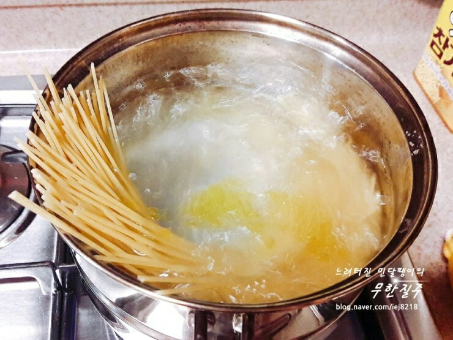
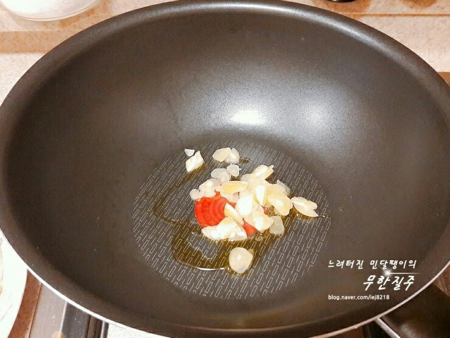
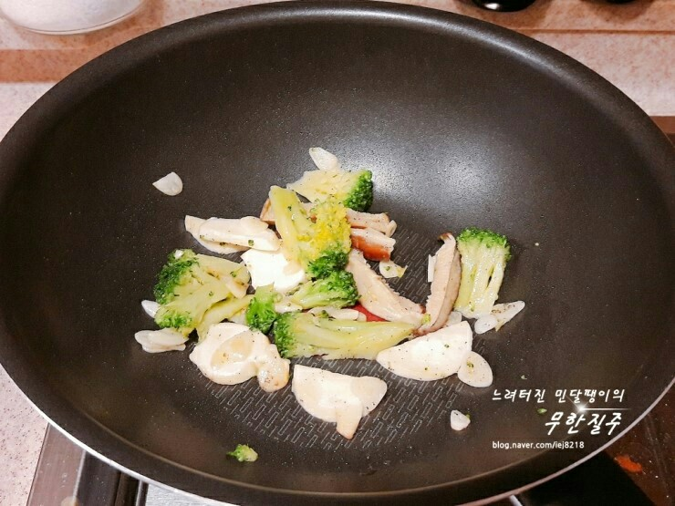
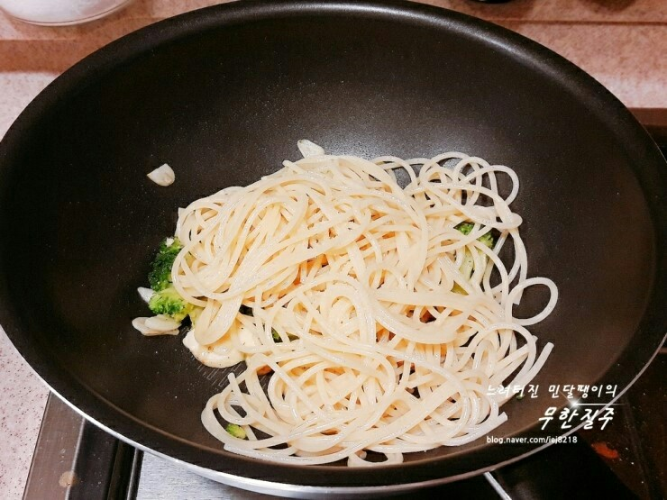
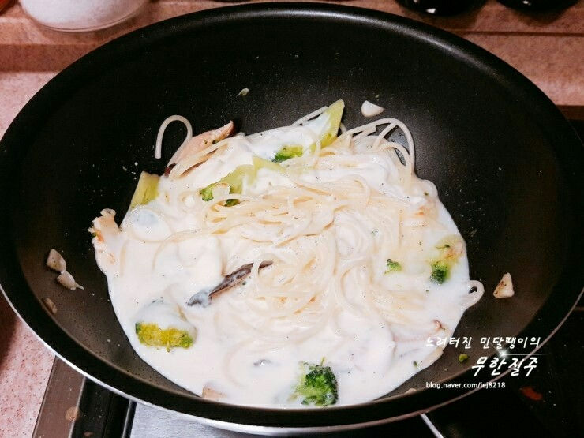
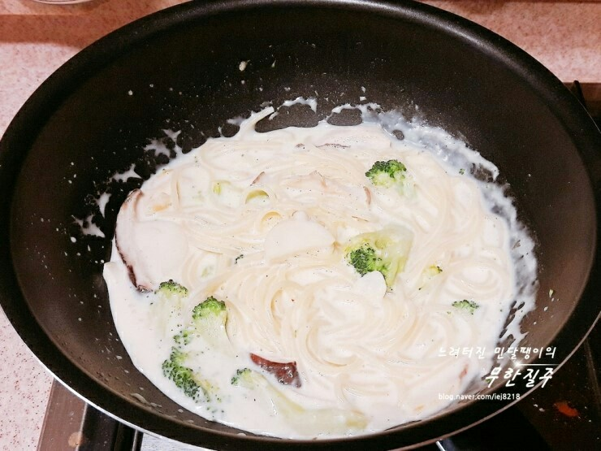

Ingredients
주 재료
- 올리브유조금
- 마늘2~3개
- 브로컬리1줌
- 소금조금
- 파슬리가루조금
- 파스타면먹을만큼
- 버섯1줌
- 크림소스2국자
- 후추조금
Steps
- 끓는 물에 소금과 올리브유를 넣고 파스타면을 약 11분간 삶아준다.

- 달군 후라이팬에 올리브유를 두르고 편마늘을 볶아준다.

- 마늘향이 나면 브로컬리와 버섯을 넣고 볶아준다.

- 파스타면을 넣고

- 크림소스도 넣어주고 소금, 후추로 간을 한다.

- 기호에 따라 파마산치즈나 체다치즈도 좋을 듯. 베이컨이 있었으면 좋았겠지만 없어도 맛있는 크림소스 스파게티 완성~~~
